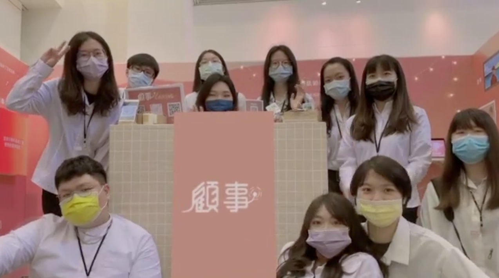

Who am I

您好，我是 Sherry
熱愛學習新知，喜歡創意思考、勇敢跳脫舒適圈
希望能做出具共鳴且有影響力的產品
Follow Me
在學期間擁有三年的打工經驗及兩年的行銷與社群經營經驗，大四時（畢業專題）與組員們推廣長照議題（顧事 Caring）， 與 11 位組員一起宣傳長期照顧的相關知識，責任範圍包括研究台灣長照現況、運用SWOT與量化研究分析政府政策與民間舉辦的活動對長照有哪些影響， 並思考「顧事」有哪些突破口，能為長照帶來哪些不一樣的變化。在一年內我們舉辦共五場線上線下活動，希望大家可以對人生有更多的想像與行動。
第一場活動12/28-12/31
人生選擇事
模擬遇到長照問題時的人生，藉由活動發展提醒你面臨選擇時可以有哪些決定，並且給予一些知識讓大家更了解長照。
第二場活動02/01-02/28
阿嬤愛的起手式
利用過年返家期間喚起年輕人對長輩的關心與照顧，在 Instagram 製作有互動效果的阿嬤濾鏡，在過年期間使用阿嬤濾鏡即可有抽獎機會。

第三場活動03/15-03/19
回憶室
大型實體活動，以第一人稱的角度假設你的媽媽失智了，當工作繁忙的你遇到這個問題會做什麼選擇？做了這個選擇後會有哪些結果？
第四場活動04/12-04/15
我的野狼騎士
固執的爺爺因年紀漸大需要照服員的居家照顧服務，但爺爺卻堅持可以照顧好自己不需外人，無論是誰照顧都須付出心力與時間陪伴 ，我們利用這檔活動讓大家理解照服員的辛苦，也對照服員有更近一步的認識。

第五場活動05/03-05/07
你我未來事
畢業專題的最後一站，也就是校內展，利用 5W1H 的敘述方式向大家說明我們為何會選擇長照作為專題，改良前幾檔的活動後一併展出， 讓前往觀展的人們對活動有更沈浸式的體驗。（製作 VR 故事書， 在翻閱書籍的同時拿出手機掃描可看見 3D 化的特定人物 + 使用 Ren.py 製作人生選擇遊戲，讓沒有參與前幾檔活動的觀眾也能迅速知道前幾檔的故事）
另外，我在團隊中與其他五位組員共同經營社群（Facebook、Instagram、LINE），我們創辦官方帳號、擔任社群小編，每個禮拜都會聚在一起討論社群內容，每月固定產出文章， 包含每檔活動前的宣傳、活動後的照片分享以及長照知識分享，希望能用最淺顯易懂的圖文讓大家一目瞭然，運用四年來學來的說故事的能力、平面設計能力與動畫製作能力，讓總社群粉絲人數將近1500人。